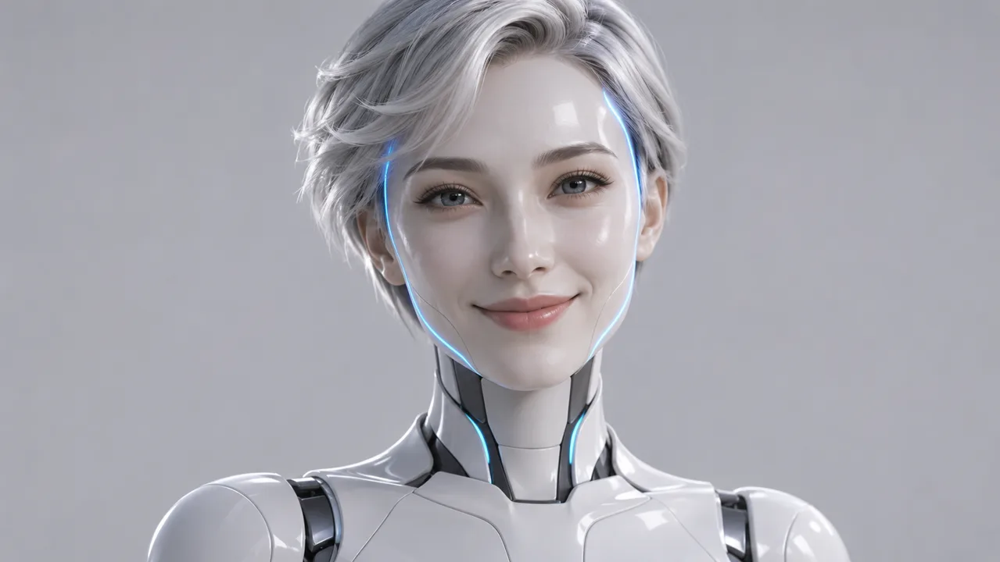
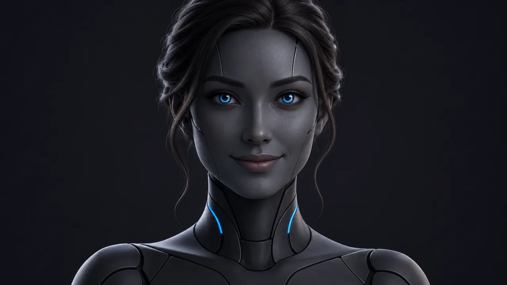
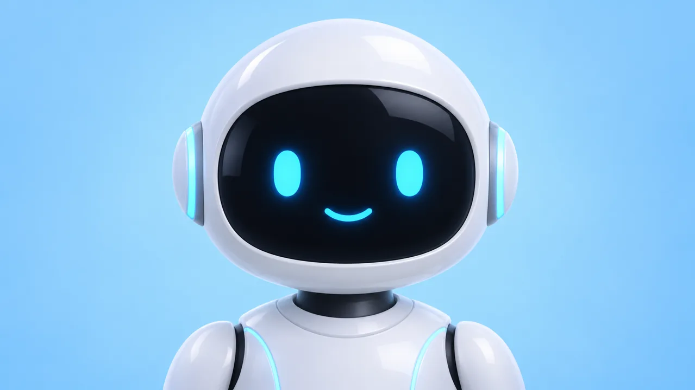
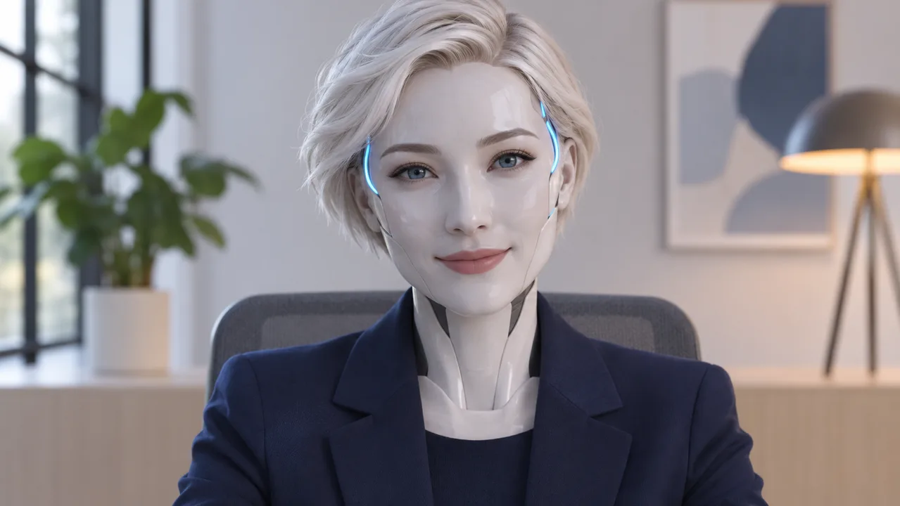

Ева будет всегда сидеть отдельной плиткой в каждом звонке на meet.deford.ru и попадать в запись. Напиши номер, который нравится, можно два-три на доработку: поправлю детали и поставлю.
Андроиды

A1 Белый фарфор, серебристые волосы, синие линии на вискахA2 Стеклянная голова со светящейся схемой, лицо живое

A3 Матовый графит, синие кольца в глазахA4 Почти человек: тонкие швы на скулах, огонёк на виске, офисA5 Слоновая кость и медь, рыжая, тёплый свет

A6 Милый робот-ассистент: экран-лицо с глазами и улыбкойA7 Половина лица человек, половина механика

A8 Фарфоровый андроид в пиджаке за столом в студии: проджект на созвоне